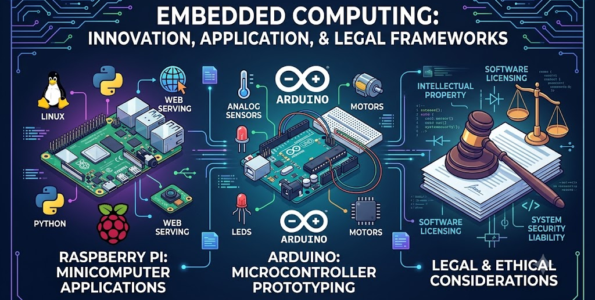

Embedded Computing
Microcontrollers, IoT, and the software inside everyday devices — explored through forensic audits of real-world embedded system failures.
Units
The tag on each unit shows where you do its work: Google Classroom, Tinkercad, Codecademy, or CodeHS.
Course Syllabus
Georgia Embedded Computing · Course 11.42700 · Social Circle High School · Mr. Norman · 2026–2027
Course Description
Embedded Computing is a third-level course in the Internet of Things pathway. Everything is built in simulation — Tinkercad for circuits — since physical Arduino hardware can no longer run on school Chromebooks. Unit 1 investigates real crimes, disasters, and engineering failures caused by embedded technology. Units 2 and 3 build working circuits in Tinkercad, from your first blinking LED to your own light/sound/motion machine. From there the year moves into programming depth: C++ in Codecademy (Unit 4), then a full Python course paired with more Tinkercad circuit work in CodeHS (Units 7–19), ending in a CodeHS final exam. By the end of the year you will have written code in three languages and built more than a dozen circuits, entirely in simulation.